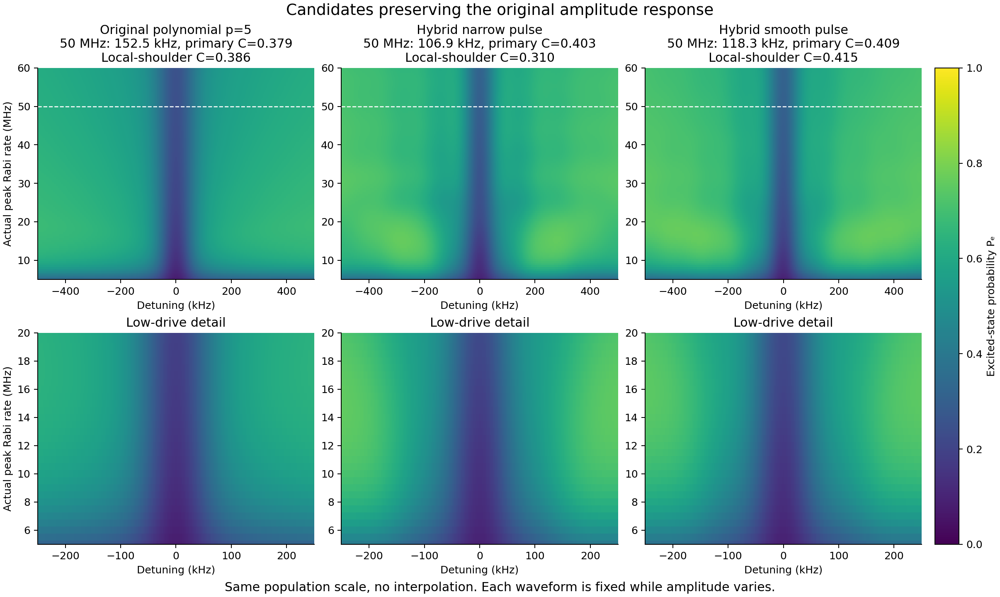
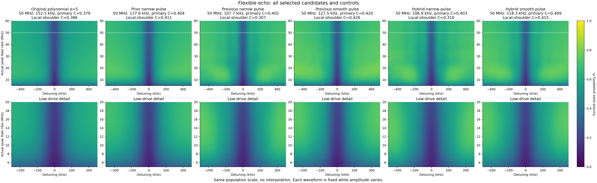
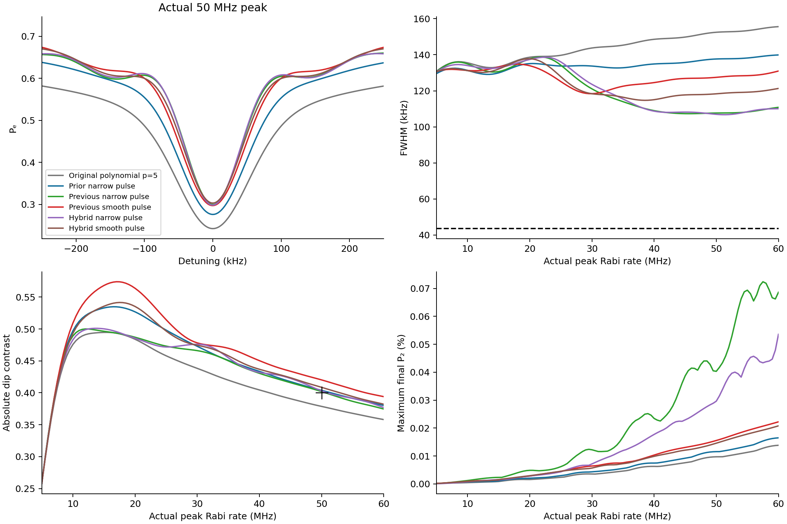
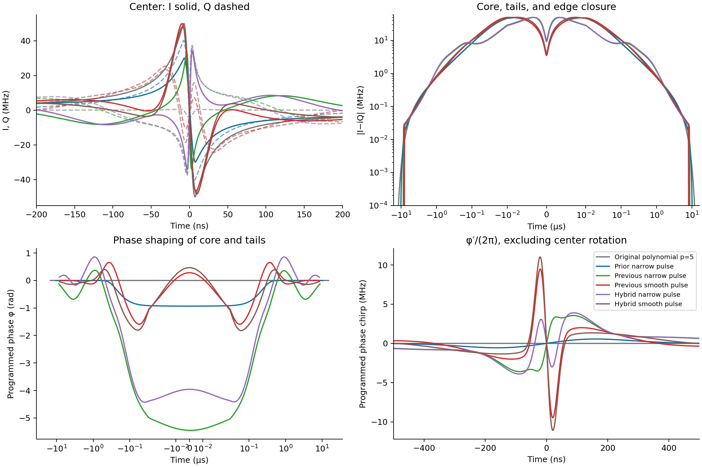
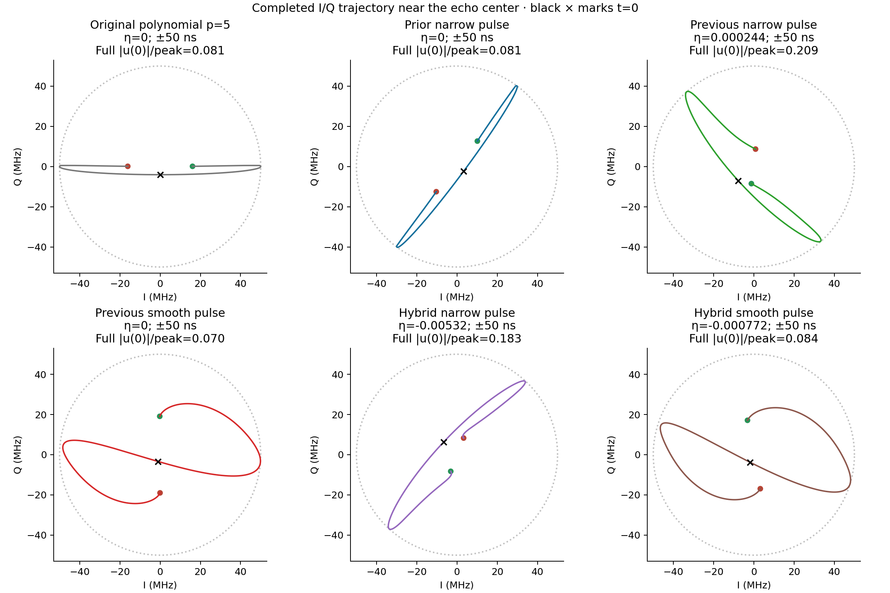
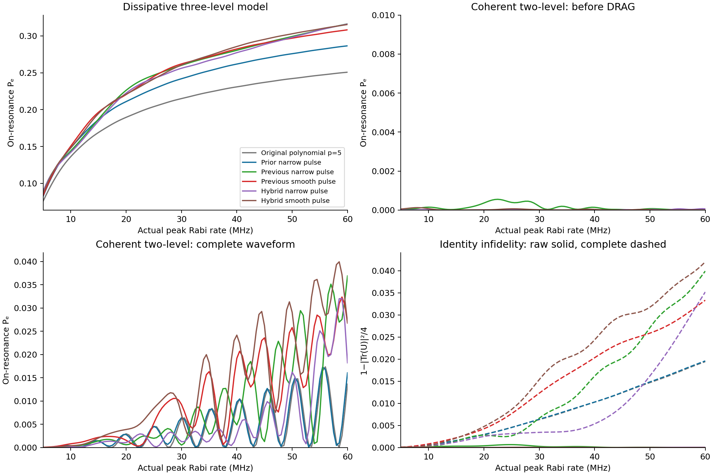
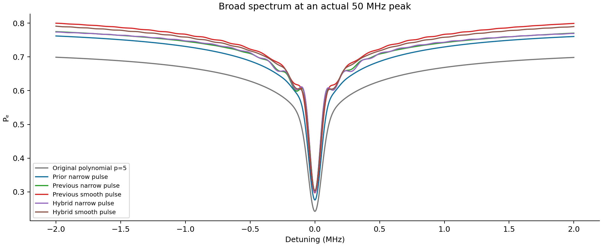
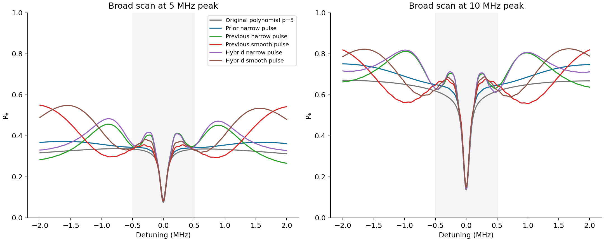

Exact selected pulse parameters and normalization
The search used 3,655 optimization evaluations across 7 campaigns. Search settings, outcomes, and source snapshots.
Each row is a direct simulation against the original polynomial on the same grid. Positive margins mean improvement; no regression tolerance is allowed. These sampled checks are not a mathematical guarantee at every real-valued amplitude or under model uncertainty.
| Pulse | Amplitude grid | Smallest linewidth improvement | Smallest contrast improvement | Result |
|---|---|---|---|---|
| Hybrid narrow pulse | 5–7 MHz, 41 points | 0.463189 kHz at 5 MHz | 0.0007914 at 5.25 MHz | Pass |
| Hybrid narrow pulse | 13.9–14.3 MHz, 9 points | 0.451014 kHz at 14.1 MHz | 0.0064555 at 14.3 MHz | Pass |
| Hybrid smooth pulse | 5–7 MHz, 41 points | 0.348888 kHz at 5 MHz | 0.0009294 at 5.35 MHz | Pass |
| Hybrid narrow pulse | 5–60 MHz, 551 points | 0.432348 kHz at 14.1 MHz | 0.0008546 at 5.2 MHz | Pass |
| Hybrid smooth pulse | 5–60 MHz, 551 points | 0.346489 kHz at 5 MHz | 0.0009400 at 5.4 MHz | Pass |
The contrast floor C>0.4 applies at 50 MHz only. Across 5–60 MHz, linewidth and contrast must preserve the original p=5 response. The held-out amplitude grid has 111 points with 0.5 MHz spacing. User constraints are shown separately from center, satellite, and leakage guardrails. Minimum contrast across the band is descriptive, not an extra full-band floor.
Primary contrast and local notch depth are different measurements. Primary C uses the fitted background at |δ|=0.4–0.5 MHz. A broad pedestal can raise this number while the isolated central notch remains shallower than 0.4. The bold local-shoulder column and fixed-offset depth expose this distinction; acceptance under the historical primary metric does not certify an isolated 0.4-depth notch.
| Shape | Primary FWHM₅₀ (kHz) | Primary C₅₀ | Local-shoulder depth₅₀ | Fixed ±0.2 MHz depth₅₀ | Minimum band C | User constraints | Guardrails within ±0.5 MHz |
|---|---|---|---|---|---|---|---|
| Original polynomial p=5 | 152.46 | 0.3787 | 0.3855 | 0.3242 | 0.2577 | FAIL | PASS |
| Prior narrow pulse | 137.63 | 0.4039 | 0.4106 | 0.3430 | 0.2597 | PASS | PASS |
| Previous narrow pulse | 107.66 | 0.4019 | 0.3066 | 0.3389 | 0.2584 | PASS | PASS |
| Previous smooth pulse | 127.46 | 0.4202 | 0.4260 | 0.3465 | 0.2583 | PASS | PASS |
| Hybrid narrow pulse | 106.93 | 0.4029 | 0.3103 | 0.3432 | 0.2585 | PASS | PASS |
| Hybrid smooth pulse | 118.32 | 0.4086 | 0.4150 | 0.3416 | 0.2587 | PASS | PASS |
The fixed-offset depth is min[P(−0.2 MHz),P(+0.2 MHz)]−P(center), where center is the raw minimum within ±0.25 MHz. It uses no background fit. Local-shoulder depth uses the lower nearest shoulder; if a side has no local maximum, its highest sampled probability within ±0.5 MHz is used. Both are diagnostics, with no change to the primary baseline comparison.

Preferred maps PDF. Color limits are 0–1 in every panel; no interpolation. Each waveform remains fixed throughout its amplitude sweep.

All maps PDF

The center parameter η introduces a continuous quadrature component during the echo reversal. It can keep the raw drive away from zero. With η=0 and no odd phase component, the pre-DRAG control is time antisymmetric and cancels exactly in the resonant coherent two-level model. A nonzero η or odd phase removes that guarantee; cancellation must be evaluated rather than assumed. The completed I/Q trajectory includes the full derivative correction. Green/red dots mark the beginning/end of the plotted center interval; the black cross marks t=0.
η=0 does not imply a zero physical I/Q center. The derivative correction can already give a nonzero completed u(0). Each trajectory reports the actual completed |u(0)| divided by its 50 MHz peak; the raw and completed center amplitudes are also saved separately in the waveform audit.


The coherent audit uses independent exact two-level step propagators with midpoint sampling, no T₁/T₂ loss, and both pre-DRAG and completed control. Its refinement error is saved below. Identity infidelity also detects residual phase rotations that an excited-state population alone misses. Dissipative on-resonance population also includes relaxation, dephasing, and multilevel dynamics. The programmed chirp plot excludes the center rotation; signed I/Q ranges, positive/negative-time peaks, and total-waveform chirp above 1% of peak are recorded in the waveform audit.


The shaded region in the low-drive scans is the primary ±0.5 MHz window. A pulse can pass guardrails there and still introduce additional spectral features farther away. The wider audit is separate and must not be described as globally clean just because the central window passes.
| Shape | Maximum secondary-dip prominence within ±0.5 MHz | Maximum within ±2 MHz | Peak amplitude at broad maximum (MHz) |
|---|---|---|---|
| Original polynomial p=5 | 0.0000 | 0.0000 | 5 |
| Prior narrow pulse | 0.0000 | 0.0000 | 5 |
| Previous narrow pulse | 0.0092 | 0.0789 | 10 |
| Previous smooth pulse | 0.0030 | 0.1190 | 10 |
| Hybrid narrow pulse | 0.0091 | 0.0946 | 10 |
| Hybrid smooth pulse | 0.0019 | 0.0980 | 10 |
The broad maximum is evaluated at peak amplitudes 5, 10, 20, 40, 50, and 60 MHz; the central-window maximum uses the full 111-point amplitude grid.
Gaussian convolution widths 1/2/4 ns correspond to approximately 133/66/33 MHz amplitude-response −3 dB bandwidths. Each complete filtered I/Q waveform is renormalized to the same actual 50 MHz peak. These are illustrative transfer functions, not hardware measurements. Filtered widths and sampled amplitude sweeps are saved with the contrast results.
| Candidate | Unfiltered C₅₀ | 1 ns C₅₀ | 2 ns C₅₀ | 4 ns C₅₀ |
|---|---|---|---|---|
| Previous narrow pulse | 0.4019 | 0.3931 | 0.3761 | 0.3368 |
| Previous smooth pulse | 0.4202 | 0.4192 | 0.4160 | 0.4047 |
| Hybrid narrow pulse | 0.4030 | 0.3959 | 0.3817 | 0.3458 |
| Hybrid smooth pulse | 0.4086 | 0.4071 | 0.4030 | 0.3887 |
Maps use the native three-level Lindblad model with T₁=51.24 µs, T₂=7.31 µs and α/2π=−216 MHz. New candidates receive timestep and frequency-grid refinement at 50 MHz, independent 3/4/5-level checks, final leakage checks, local-shoulder contrast, and ±2 MHz scans. Numerical convergence diagnostics remain separate from the spectral acceptance rules. No hardware experiment was run. Historical controls are imported only when raw-cache identities match exactly; their source files remain unchanged.
search summary.json · implementation validation.json
All metrics and provenance · Population and waveform arrays · Exact historical cache imports · Comparison PDF · I/Q trajectory PDF
{
"amplitude_min_mhz": 5.0,
"amplitude_max_mhz": 60.0,
"contrast_min_at50": 0.4,
"no_regression_width_khz_tolerance": 0.0,
"no_regression_contrast_tolerance": 0.0,
"max_center_khz": 2.0,
"max_satellite_prominence": 0.01,
"max_final_leakage": 0.005
}
{
"baseline": {
"duration_us": 30.0,
"cutoff": 0.001,
"power": 5.0,
"transition_us": 0.016,
"drag_beta": -0.5,
"anharmonicity_mhz": -216.0
},
"prior_narrow": {
"duration_us": 21.101242835090837,
"core_us": 0.01510528514643049,
"tail_gain": 0.8072371180256004,
"tail_join_us": 1.5190416076585926,
"tail_scale_us": 6.612120613753458,
"tail_power": 3.536388272093394,
"edge_width_us": 3.3619104832707443,
"transition_us": 0.016,
"drag_beta": -0.5,
"anharmonicity_mhz": -216.0,
"phase_rad": -0.9331851920697108,
"phase_scale_us": 0.22742916237553631,
"phase2_rad": 0.0,
"phase2_scale_us": 4.0
},
"previous_narrow": {
"duration_us": 17.51898666760054,
"core_us": 0.004917773775921489,
"tail_gain": 0.10000000000000038,
"tail_join_us": 0.5489644263285443,
"tail_scale_us": 7.874200342393424,
"tail_power": 1.9899653435712574e-09,
"edge_width_us": 0.2627848000140081,
"transition_us": 0.013129003265668482,
"drag_beta": -0.5,
"anharmonicity_mhz": -216.0,
"phase_rad": -2.3040713786751086,
"phase_scale_us": 0.46274353220371994,
"phase2_rad": 0.0,
"phase2_scale_us": 4.0,
"rotation_mix": 0.00024409683504345026,
"amp_coefficients": [
-1.4996404728431896,
-1.0987654852818116,
0.16333723244105092,
0.6503756618534053
],
"phase_coefficients": [
-0.3987101550271701,
-2.839479797847318,
-0.6611917424190885,
1.8344634616071112,
-1.0808473640723364
],
"odd_phase_coefficients": [
-0.019940322440489044,
-0.07449909989912396,
-0.021924089155143545
]
},
"previous_smooth": {
"duration_us": 16.178299069401664,
"core_us": 0.016324410942141643,
"tail_gain": 0.25821137286930257,
"tail_join_us": 2.5602620847803212,
"tail_scale_us": 10.579858486411853,
"tail_power": 0.0027890425617156053,
"edge_width_us": 0.24344295524682155,
"transition_us": 0.03677761518153051,
"drag_beta": -0.5,
"anharmonicity_mhz": -216.0,
"phase_rad": -2.890301925464823,
"phase_scale_us": 0.22820110102473484,
"phase2_rad": 0.0,
"phase2_scale_us": 4.0,
"rotation_mix": 0.0,
"amp_coefficients": [
-0.14971141822374157,
0.28876971639384763,
0.01342426018232623,
0.19866305297385445
],
"phase_coefficients": [
2.2183733039702016,
-0.6706607816533459,
1.8183860231091895,
-0.20577346183226686,
0.011303812022317228
],
"odd_phase_coefficients": [
0.0,
0.0,
0.0
]
},
"hybrid_narrow": {
"duration_us": 16.9184645550316,
"core_us": 0.0047289477790322864,
"tail_gain": 0.10000000000000432,
"tail_join_us": 0.5224208921668826,
"tail_scale_us": 7.6810358428374395,
"tail_power": 3.739859511584282e-11,
"edge_width_us": 0.04229616138810648,
"transition_us": 0.01510334701772326,
"drag_beta": -0.4944000288006928,
"anharmonicity_mhz": -216.0,
"phase_rad": -2.420721245605598,
"phase_scale_us": 0.4884946455010242,
"phase2_rad": -2.3092003251351914,
"phase2_scale_us": 3.7079350125448887,
"rotation_mix": -0.00532008401400208,
"amp_coefficients": [
-1.5284935229074128,
-1.1763603179745132,
0.3289372310729566,
0.6222648938892883
],
"phase_coefficients": [
0.9771460971436694,
-3.141339530993458,
-0.7208214474091266,
2.6983416019920323,
0.9584292414428184
],
"odd_phase_coefficients": [
0.008812550894490734,
0.016426533662732723,
-0.002867207402713845
]
},
"hybrid_smooth": {
"duration_us": 16.794324065509525,
"core_us": 0.014364746194592036,
"tail_gain": 0.22786650067107458,
"tail_join_us": 2.1604545957600307,
"tail_scale_us": 10.954811618329536,
"tail_power": 3.908474974150027e-13,
"edge_width_us": 0.04198581016377381,
"transition_us": 0.030331160061040873,
"drag_beta": -0.5069522747203227,
"anharmonicity_mhz": -216.0,
"phase_rad": -3.265269819394818,
"phase_scale_us": 0.29418844694013385,
"phase2_rad": 0.2692490396161915,
"phase2_scale_us": 3.154340175792601,
"rotation_mix": -0.0007716438874767473,
"amp_coefficients": [
-0.31625063555034316,
0.12680686582500478,
0.15514782818317885,
0.02794278261740679
],
"phase_coefficients": [
2.50739778587862,
-0.3181021709381504,
1.5203754039221478,
0.059843657236457126,
-0.30668954425581285
],
"odd_phase_coefficients": [
-0.010036979517601186,
-0.015474236880905323,
-0.01587042373711789
]
}
}{
"baseline": {
"waveform": {
"actual_sampled_peak_mhz": 49.99999665336756,
"negative_time_peak_mhz": 49.99999665336756,
"positive_time_peak_mhz": 49.99999665336756,
"i_min_mhz": -49.9999966344313,
"i_max_mhz": 49.9999966344313,
"q_min_mhz": -4.061195992493328,
"q_max_mhz": 0.531276519573453,
"raw_time_antisymmetry_relative_error": 0.0,
"completed_time_antisymmetry_relative_error": 0.16244785057279806,
"programmed_chirp_min_mhz": 0.0,
"programmed_chirp_max_mhz": 0.0,
"completed_chirp_min_mhz_above_1percent_peak": -0.03253580996550319,
"completed_chirp_max_mhz_above_1percent_peak": 431.99065810245975,
"rotation_mix": 0.0,
"odd_phase_coefficients": [],
"center_i_mhz": 0.0,
"center_q_mhz": -4.061195992493328,
"completed_center_magnitude_mhz": 4.061195992493328,
"completed_center_fraction_of_peak": 0.08122391984986656,
"raw_center_magnitude_mhz": 0.0,
"raw_center_fraction_of_completed_peak": 0.0
},
"validation": {
"native_diagnostics": {
"max_trace_error": 6.261657858885883e-14,
"min_population": 6.560690889018028e-07,
"max_population": 0.9242928934402256,
"min_density_eigenvalue": 6.56060569599605e-07,
"num_steps": 120064,
"min_dt_ns": 0.125,
"max_dt_ns": 0.25,
"merged_exact_amplitude_chunks": 2
},
"native_map_cache_components": [
"validate_native_a9325ce1f616ed28a3779028c5fcc457ddea5a099dfcc48514b7b4b51b294df1.npz",
"validate_native_f88c612e2b5c5dc92659faa230cdfc0c0eb132bbd2571adff9859fc596852cd7.npz"
],
"native_dt_halving_max_population": 1.0946534900746485e-08,
"native_dt_halving_fwhm_change_khz": 1.3885059452150017e-06,
"detuning_halving_fwhm_change_khz": 0.016979101739299948,
"fine_grid_50mhz": {
"center_hz": 104.00859407350883,
"fwhm_hz": 152461.6870399733,
"contrast": 0.37872127626815855,
"accepted": true,
"local_shoulders": {
"accepted": true,
"contrast": 0.3855292165494085,
"fwhm_hz": 154911.66423691766,
"center_mhz": 0.0,
"left_shoulder_mhz": -0.5,
"right_shoulder_mhz": 0.5
},
"fixed_offset_depth": {
"offset_mhz": 0.2,
"center_detuning_mhz": 0.0,
"probability_at_center": 0.2421783443171298,
"probability_at_negative_offset": 0.5665909252131214,
"probability_at_positive_offset": 0.5663721600727533,
"conservative_depth": 0.32419381575562345,
"mean_offset_depth": 0.32430319832580745
}
},
"wide_native_diagnostics": {
"max_trace_error": 5.773159728050814e-14,
"min_population": 3.293325949656337e-07,
"max_population": 0.9242928934402256,
"min_density_eigenvalue": 3.2932979174245967e-07,
"num_steps": 120064,
"min_dt_ns": 0.125,
"max_dt_ns": 0.25
},
"coherent_refinement_max_population": {
"raw": 6.024317617446055e-29,
"complete": 6.501452996798829e-07
},
"coherent_refinement_max_identity_infidelity": {
"raw": 4.884981308350689e-14,
"complete": 2.040464819330623e-07
},
"coherent_max_on_resonance_population": {
"raw": 6.107957378435014e-29,
"complete": 0.01735943307693557
},
"coherent_max_identity_infidelity": {
"raw": 4.884981308350689e-14,
"complete": 0.01944329500802
}
},
"constraints": {
"user_constraints_pass": false,
"quality_guardrails_pass": true,
"accepted": false,
"contrast_at50_pass": false,
"invalid_amplitudes_mhz": [],
"linewidth_regression_amplitudes_mhz": [],
"contrast_regression_amplitudes_mhz": [],
"center_failure_amplitudes_mhz": [],
"satellite_failure_amplitudes_mhz": [],
"leakage_failure_amplitudes_mhz": [],
"minimum_band_contrast": 0.25765744419718556,
"worst_width_change_khz": 0.0,
"worst_contrast_change": 0.0,
"maximum_final_leakage": 0.0001384165787858277
}
},
"prior_narrow": {
"waveform": {
"actual_sampled_peak_mhz": 49.99999741230591,
"negative_time_peak_mhz": 49.990266706881386,
"positive_time_peak_mhz": 49.99999741230591,
"i_min_mhz": -29.956958253058836,
"i_max_mhz": 29.946712303717476,
"q_min_mhz": -40.211935783106746,
"q_max_mhz": 40.19853191456566,
"raw_time_antisymmetry_relative_error": 0.0,
"completed_time_antisymmetry_relative_error": 0.1621971981444673,
"programmed_chirp_min_mhz": -0.5601567461760462,
"programmed_chirp_max_mhz": 0.5601567461760462,
"completed_chirp_min_mhz_above_1percent_peak": -0.5623620845325517,
"completed_chirp_max_mhz_above_1percent_peak": 431.9906937312345,
"rotation_mix": 0.0,
"odd_phase_coefficients": [],
"center_i_mhz": 3.258217501816973,
"center_q_mhz": -2.4138090101805703,
"completed_center_magnitude_mhz": 4.054929743753317,
"completed_center_fraction_of_peak": 0.08109859487506635,
"raw_center_magnitude_mhz": 0.0,
"raw_center_fraction_of_completed_peak": 0.0
},
"validation": {
"native_diagnostics": {
"max_trace_error": 4.218847493575595e-14,
"min_population": 4.984698080750249e-07,
"max_population": 0.9176435570300934,
"min_density_eigenvalue": 4.984178732633835e-07,
"num_steps": 84470,
"min_dt_ns": 0.125,
"max_dt_ns": 0.25,
"merged_exact_amplitude_chunks": 2
},
"native_map_cache_components": [
"validate_native_63771f796d086f3882d4177da2f7333a87fda9c830df609f18ed597452dfeecf.npz",
"validate_native_ac6a0c5693cd14e700a11cbe5a37cdeed0f7d4fde17083c0b22dda9a3bf2f358.npz"
],
"native_dt_halving_max_population": 1.136479099717036e-08,
"native_dt_halving_fwhm_change_khz": 1.3724735181313008e-06,
"detuning_halving_fwhm_change_khz": 0.019769072511291598,
"fine_grid_50mhz": {
"center_hz": 115.43458661091647,
"fwhm_hz": 137630.76440220655,
"contrast": 0.403856808017539,
"accepted": true,
"local_shoulders": {
"accepted": true,
"contrast": 0.4106050227147523,
"fwhm_hz": 139668.0758288797,
"center_mhz": 0.0,
"left_shoulder_mhz": -0.5,
"right_shoulder_mhz": 0.5
},
"fixed_offset_depth": {
"offset_mhz": 0.2,
"center_detuning_mhz": 0.0,
"probability_at_center": 0.27590592049689966,
"probability_at_negative_offset": 0.6198541195307287,
"probability_at_positive_offset": 0.6189334446206638,
"conservative_depth": 0.34302752412376414,
"mean_offset_depth": 0.3434878615787966
}
},
"wide_native_diagnostics": {
"max_trace_error": 4.1744385725905886e-14,
"min_population": 3.7536776564181846e-07,
"max_population": 0.9176435570300934,
"min_density_eigenvalue": 3.7529883159650165e-07,
"num_steps": 84470,
"min_dt_ns": 0.125,
"max_dt_ns": 0.25
},
"coherent_refinement_max_population": {
"raw": 1.1298830719310886e-28,
"complete": 6.595600188421397e-07
},
"coherent_refinement_max_identity_infidelity": {
"raw": 3.3084646133829665e-14,
"complete": 2.034276057605311e-07
},
"coherent_max_on_resonance_population": {
"raw": 1.1455292837924786e-28,
"complete": 0.017314787693721394
},
"coherent_max_identity_infidelity": {
"raw": 3.9968028886505635e-14,
"complete": 0.019600162863015247
},
"split3_vs_native_max_pe": 2.0810482246336193e-06,
"levels3_vs4_max_pe": 0.00043136508694474607,
"levels4_vs5_max_pe": 1.4162792588146011e-06,
"split4_dt_refinement_max_pe": 2.8236363773803674e-06,
"levels4_metrics": {
"center_hz": 23.202269321458186,
"fwhm_hz": 137693.17082079986,
"contrast": 0.4038456096775912,
"accepted": true
},
"levels5_metrics": {
"center_hz": 22.6708529455756,
"fwhm_hz": 137693.36366608497,
"contrast": 0.403845448892322,
"accepted": true
},
"levels4_max_final_leakage": 0.0001181019037088636,
"levels5_max_final_leakage": 0.00011808256154464913
},
"constraints": {
"user_constraints_pass": true,
"quality_guardrails_pass": true,
"accepted": true,
"contrast_at50_pass": true,
"invalid_amplitudes_mhz": [],
"linewidth_regression_amplitudes_mhz": [],
"contrast_regression_amplitudes_mhz": [],
"center_failure_amplitudes_mhz": [],
"satellite_failure_amplitudes_mhz": [],
"leakage_failure_amplitudes_mhz": [],
"minimum_band_contrast": 0.25973675917563843,
"worst_width_change_khz": -1.31456213577975,
"worst_contrast_change": 0.002079314978452873,
"maximum_final_leakage": 0.00016503963954515898
}
},
"previous_narrow": {
"waveform": {
"actual_sampled_peak_mhz": 49.999995941560876,
"negative_time_peak_mhz": 49.84660825811717,
"positive_time_peak_mhz": 49.999995941560876,
"i_min_mhz": -33.953973717386994,
"i_max_mhz": 33.383078252622056,
"q_min_mhz": -37.46208148219284,
"q_max_mhz": 37.39643014071748,
"raw_time_antisymmetry_relative_error": 0.011567644522168685,
"completed_time_antisymmetry_relative_error": 0.41873482338875,
"programmed_chirp_min_mhz": -3.5974122967062323,
"programmed_chirp_max_mhz": 3.560408071244472,
"completed_chirp_min_mhz_above_1percent_peak": -3.6004460504435407,
"completed_chirp_max_mhz_above_1percent_peak": 431.113702084861,
"rotation_mix": 0.00024409683504345026,
"odd_phase_coefficients": [
-0.019940322440489044,
-0.07449909989912396,
-0.021924089155143545
],
"center_i_mhz": -7.748550535368894,
"center_q_mhz": -7.038943777995993,
"completed_center_magnitude_mhz": 10.468369735013857,
"completed_center_fraction_of_peak": 0.20936739470027713,
"raw_center_magnitude_mhz": 0.015436354549999885,
"raw_center_fraction_of_completed_peak": 0.0003087270909999977
},
"validation": {
"native_diagnostics": {
"max_trace_error": 3.708144902248023e-14,
"min_population": 2.522991635366379e-07,
"max_population": 0.9110681140956937,
"min_density_eigenvalue": 2.4505193193458524e-07,
"num_steps": 70162,
"min_dt_ns": 0.09686634452427956,
"max_dt_ns": 0.249996172356943
},
"native_map_cache_components": [
"validate_native_9e3578877ff19351a2ad1457aa31eba7a3f48524711e04c1908a746344a4126c.npz"
],
"native_dt_halving_max_population": 9.237223361213687e-09,
"native_dt_halving_fwhm_change_khz": 9.276888595195487e-07,
"detuning_halving_fwhm_change_khz": 0.012810407752433093,
"fine_grid_50mhz": {
"center_hz": 396.2259187228092,
"fwhm_hz": 107659.48249860427,
"contrast": 0.4019096806333042,
"accepted": true,
"local_shoulders": {
"accepted": true,
"contrast": 0.306557676859682,
"fwhm_hz": 88199.56152989272,
"center_mhz": 0.0,
"left_shoulder_mhz": -0.10249999999999998,
"right_shoulder_mhz": 0.10625000000000007
},
"fixed_offset_depth": {
"offset_mhz": 0.2,
"center_detuning_mhz": 0.0,
"probability_at_center": 0.2993207534397066,
"probability_at_negative_offset": 0.6382452724677782,
"probability_at_positive_offset": 0.6428651353084436,
"conservative_depth": 0.3389245190280716,
"mean_offset_depth": 0.3412344504484042
}
},
"wide_native_diagnostics": {
"max_trace_error": 3.3084646133829665e-14,
"min_population": 2.514303147065862e-07,
"max_population": 0.9110681140956937,
"min_density_eigenvalue": 2.441451101185511e-07,
"num_steps": 70162,
"min_dt_ns": 0.09686634452427956,
"max_dt_ns": 0.249996172356943
},
"coherent_refinement_max_population": {
"raw": 2.950894130557182e-09,
"complete": 1.7795076848736713e-06
},
"coherent_refinement_max_identity_infidelity": {
"raw": 2.796374021230008e-09,
"complete": 4.183294436410634e-07
},
"coherent_max_on_resonance_population": {
"raw": 0.00055346544498211,
"complete": 0.03689624942034769
},
"coherent_max_identity_infidelity": {
"raw": 0.000675232873399767,
"complete": 0.03990855386412595
},
"split3_vs_native_max_pe": 3.8856370843332044e-05,
"levels3_vs4_max_pe": 0.00042564379064369273,
"levels4_vs5_max_pe": 1.0795697051868558e-06,
"split4_dt_refinement_max_pe": 5.53370094878991e-05,
"levels4_metrics": {
"center_hz": 356.9211712185529,
"fwhm_hz": 107721.70048946832,
"contrast": 0.4019314788497344,
"accepted": true
},
"levels5_metrics": {
"center_hz": 356.2931035558652,
"fwhm_hz": 107712.54224813214,
"contrast": 0.4019104269506249,
"accepted": true
},
"levels4_max_final_leakage": 0.0003920553149974177,
"levels5_max_final_leakage": 0.0003954013794134156
},
"constraints": {
"user_constraints_pass": true,
"quality_guardrails_pass": true,
"accepted": true,
"contrast_at50_pass": true,
"invalid_amplitudes_mhz": [],
"linewidth_regression_amplitudes_mhz": [],
"contrast_regression_amplitudes_mhz": [],
"center_failure_amplitudes_mhz": [],
"satellite_failure_amplitudes_mhz": [],
"leakage_failure_amplitudes_mhz": [],
"minimum_band_contrast": 0.25844803996347165,
"worst_width_change_khz": -0.15250055712548782,
"worst_contrast_change": 9.273705741180693e-05,
"maximum_final_leakage": 0.0007239347097567231
}
},
"previous_smooth": {
"waveform": {
"actual_sampled_peak_mhz": 49.99999928375429,
"negative_time_peak_mhz": 49.99999928375429,
"positive_time_peak_mhz": 48.526702360200986,
"i_min_mhz": -48.3805014927247,
"i_max_mhz": 49.883194027418384,
"q_min_mhz": -24.31222408053501,
"q_max_mhz": 25.401889422111694,
"raw_time_antisymmetry_relative_error": 0.0,
"completed_time_antisymmetry_relative_error": 0.14056551223769054,
"programmed_chirp_min_mhz": -9.476139419540878,
"programmed_chirp_max_mhz": 9.476139419540878,
"completed_chirp_min_mhz_above_1percent_peak": -9.4974526306748,
"completed_chirp_max_mhz_above_1percent_peak": 431.99124179373024,
"rotation_mix": 0.0,
"odd_phase_coefficients": [
0.0,
0.0,
0.0
],
"center_i_mhz": -0.9756325135980224,
"center_q_mhz": -3.375989538455603,
"completed_center_magnitude_mhz": 3.5141377556025417,
"completed_center_fraction_of_peak": 0.07028275511205083,
"raw_center_magnitude_mhz": 0.0,
"raw_center_fraction_of_completed_peak": 0.0
},
"validation": {
"native_diagnostics": {
"max_trace_error": 3.9190872769268026e-14,
"min_population": 3.202779438682128e-07,
"max_population": 0.9166496813574743,
"min_density_eigenvalue": 3.202779434516869e-07,
"num_steps": 64728,
"min_dt_ns": 0.22937740540262366,
"max_dt_ns": 0.2499904311433138
},
"native_map_cache_components": [
"validate_native_1f43edc3ceed719e78707df4879aa547ecba1d68d20d852d15be76c73e3b94e2.npz"
],
"native_dt_halving_max_population": 2.6715210654781885e-08,
"native_dt_halving_fwhm_change_khz": 2.139686592272483e-06,
"detuning_halving_fwhm_change_khz": 0.018145317114089267,
"fine_grid_50mhz": {
"center_hz": -166.15592221945056,
"fwhm_hz": 127456.97862022153,
"contrast": 0.42021018028748885,
"accepted": true,
"local_shoulders": {
"accepted": true,
"contrast": 0.42596966073269266,
"fwhm_hz": 128934.85251033754,
"center_mhz": 0.0,
"left_shoulder_mhz": -0.5,
"right_shoulder_mhz": 0.5
},
"fixed_offset_depth": {
"offset_mhz": 0.2,
"center_detuning_mhz": 0.0,
"probability_at_center": 0.2969742451557938,
"probability_at_negative_offset": 0.6438158275425898,
"probability_at_positive_offset": 0.6434474118528912,
"conservative_depth": 0.34647316669709743,
"mean_offset_depth": 0.34665737454194673
}
},
"wide_native_diagnostics": {
"max_trace_error": 3.352873534367973e-14,
"min_population": 3.1032173296767603e-07,
"max_population": 0.9166496813574743,
"min_density_eigenvalue": 3.1032173250223863e-07,
"num_steps": 64728,
"min_dt_ns": 0.22937740540262366,
"max_dt_ns": 0.2499904311433138
},
"coherent_refinement_max_population": {
"raw": 5.181395500982398e-29,
"complete": 7.499133514651812e-07
},
"coherent_refinement_max_identity_infidelity": {
"raw": 4.418687638008123e-14,
"complete": 2.8012279673639284e-07
},
"coherent_max_on_resonance_population": {
"raw": 5.835377761071894e-29,
"complete": 0.03235712412902852
},
"coherent_max_identity_infidelity": {
"raw": 4.418687638008123e-14,
"complete": 0.03332754415321715
},
"split3_vs_native_max_pe": 5.339034647722229e-07,
"levels3_vs4_max_pe": 0.0005412879969737272,
"levels4_vs5_max_pe": 1.66817718644241e-06,
"split4_dt_refinement_max_pe": 4.674593294673457e-07,
"levels4_metrics": {
"center_hz": -59.28790046903159,
"fwhm_hz": 127516.58784177287,
"contrast": 0.4201678158182972,
"accepted": true
},
"levels5_metrics": {
"center_hz": -58.94172368261281,
"fwhm_hz": 127516.66413101048,
"contrast": 0.4201676038206295,
"accepted": true
},
"levels4_max_final_leakage": 0.00015874302825722862,
"levels5_max_final_leakage": 0.00015879761113657797
},
"constraints": {
"user_constraints_pass": true,
"quality_guardrails_pass": true,
"accepted": true,
"contrast_at50_pass": true,
"invalid_amplitudes_mhz": [],
"linewidth_regression_amplitudes_mhz": [],
"contrast_regression_amplitudes_mhz": [],
"center_failure_amplitudes_mhz": [],
"satellite_failure_amplitudes_mhz": [],
"leakage_failure_amplitudes_mhz": [],
"minimum_band_contrast": 0.2583227430835062,
"worst_width_change_khz": -0.1097565220973047,
"worst_contrast_change": 0.0006652988863206644,
"maximum_final_leakage": 0.00022233684831250095,
"extra_local_contrast_pass": true
}
},
"hybrid_narrow": {
"waveform": {
"actual_sampled_peak_mhz": 49.99999849394328,
"negative_time_peak_mhz": 49.99999849394328,
"positive_time_peak_mhz": 49.7867070787706,
"i_min_mhz": -34.15062198271413,
"i_max_mhz": 33.9786349276513,
"q_min_mhz": -37.14383948266825,
"q_max_mhz": 36.71929017138438,
"raw_time_antisymmetry_relative_error": 0.014276963136010398,
"completed_time_antisymmetry_relative_error": 0.36638196806570855,
"programmed_chirp_min_mhz": -3.9030728093937017,
"programmed_chirp_max_mhz": 3.90266115071323,
"completed_chirp_min_mhz_above_1percent_peak": -3.905769386618733,
"completed_chirp_max_mhz_above_1percent_peak": 453.5154351281106,
"rotation_mix": -0.00532008401400208,
"odd_phase_coefficients": [
0.008812550894490734,
0.016426533662732723,
-0.002867207402713845
],
"center_i_mhz": -6.675511663493633,
"center_q_mhz": 6.271752590281925,
"completed_center_magnitude_mhz": 9.159548925746702,
"completed_center_fraction_of_peak": 0.18319097851493404,
"raw_center_magnitude_mhz": 0.35632464063499,
"raw_center_fraction_of_completed_peak": 0.0071264928126998
},
"validation": {
"native_diagnostics": {
"max_trace_error": 3.885780586188048e-14,
"min_population": 2.1817907045938551e-07,
"max_population": 0.9109369131446335,
"min_density_eigenvalue": 2.1269155821339957e-07,
"num_steps": 67754,
"min_dt_ns": 0.1153401897324948,
"max_dt_ns": 0.2499970328202923
},
"native_map_cache_components": [
"validate_native_cf7123c4465aac053dc6ca3565144336c802a859f259c26053fc6ef3eb653daf.npz"
],
"native_dt_halving_max_population": 8.196330048373425e-09,
"native_dt_halving_fwhm_change_khz": 2.7260060596745463e-07,
"detuning_halving_fwhm_change_khz": 0.024282658510128386,
"fine_grid_50mhz": {
"center_hz": -119.51490882567711,
"fwhm_hz": 106926.07174873145,
"contrast": 0.4029346291153856,
"accepted": true,
"local_shoulders": {
"accepted": true,
"contrast": 0.3103029285727088,
"fwhm_hz": 88349.97807076709,
"center_mhz": 0.0,
"left_shoulder_mhz": -0.10375000000000001,
"right_shoulder_mhz": 0.10375000000000001
},
"fixed_offset_depth": {
"offset_mhz": 0.2,
"center_detuning_mhz": 0.0,
"probability_at_center": 0.2981833922096243,
"probability_at_negative_offset": 0.6413359653140545,
"probability_at_positive_offset": 0.6428731983938405,
"conservative_depth": 0.34315257310443015,
"mean_offset_depth": 0.34392118964432317
}
},
"wide_native_diagnostics": {
"max_trace_error": 3.097522238704187e-14,
"min_population": 2.0853707167146473e-07,
"max_population": 0.9109369131446335,
"min_density_eigenvalue": 2.032662497600503e-07,
"num_steps": 67754,
"min_dt_ns": 0.1153401897324948,
"max_dt_ns": 0.2499970328202923
},
"coherent_refinement_max_population": {
"raw": 3.4399601894346274e-09,
"complete": 1.4041378895712775e-06
},
"coherent_refinement_max_identity_infidelity": {
"raw": 1.305509700344487e-09,
"complete": 7.699906077185403e-07
},
"coherent_max_on_resonance_population": {
"raw": 7.230498955719455e-05,
"complete": 0.03202081412484588
},
"coherent_max_identity_infidelity": {
"raw": 7.325380371314694e-05,
"complete": 0.03518438408428548
},
"split3_vs_native_max_pe": 1.9318727991102236e-05,
"levels3_vs4_max_pe": 0.00045409183981648393,
"levels4_vs5_max_pe": 1.2727769294063052e-06,
"split4_dt_refinement_max_pe": 3.105718269957869e-05,
"levels4_metrics": {
"center_hz": -195.37810705305748,
"fwhm_hz": 107013.79593001612,
"contrast": 0.4029478801920172,
"accepted": true
},
"levels5_metrics": {
"center_hz": -194.668764873851,
"fwhm_hz": 107011.55399098886,
"contrast": 0.40296983723825314,
"accepted": true
},
"levels4_max_final_leakage": 0.0002818581059993321,
"levels5_max_final_leakage": 0.0002855216662026608
},
"constraints": {
"user_constraints_pass": true,
"quality_guardrails_pass": true,
"accepted": true,
"contrast_at50_pass": true,
"invalid_amplitudes_mhz": [],
"linewidth_regression_amplitudes_mhz": [],
"contrast_regression_amplitudes_mhz": [],
"center_failure_amplitudes_mhz": [],
"satellite_failure_amplitudes_mhz": [],
"leakage_failure_amplitudes_mhz": [],
"minimum_band_contrast": 0.2585424210362058,
"worst_width_change_khz": -0.43430213257140715,
"worst_contrast_change": 0.000884976839020224,
"maximum_final_leakage": 0.0005357046663086017,
"critical_narrow_pass": true,
"critical_narrow_width_pass": true,
"dense_band_narrow_pass": true
}
},
"hybrid_smooth": {
"waveform": {
"actual_sampled_peak_mhz": 49.999988690438286,
"negative_time_peak_mhz": 49.999988690438286,
"positive_time_peak_mhz": 48.50272557883683,
"i_min_mhz": -46.50116859021553,
"i_max_mhz": 48.10413946654811,
"q_min_mhz": -22.405357504130244,
"q_max_mhz": 23.390525262351723,
"raw_time_antisymmetry_relative_error": 0.007502513181125525,
"completed_time_antisymmetry_relative_error": 0.16814300984021718,
"programmed_chirp_min_mhz": -11.087828940557364,
"programmed_chirp_max_mhz": 11.024032581094758,
"completed_chirp_min_mhz_above_1percent_peak": -11.125105505578295,
"completed_chirp_max_mhz_above_1percent_peak": 430.5223166169424,
"rotation_mix": -0.0007716438874767473,
"odd_phase_coefficients": [
-0.010036979517601186,
-0.015474236880905323,
-0.01587042373711789
],
"center_i_mhz": -1.8917548828267408,
"center_q_mhz": -3.753838078355696,
"completed_center_magnitude_mhz": 4.2035742951935555,
"completed_center_fraction_of_peak": 0.0840714859038711,
"raw_center_magnitude_mhz": 0.045194325952819844,
"raw_center_fraction_of_completed_peak": 0.0009038865190563968
},
"validation": {
"native_diagnostics": {
"max_trace_error": 3.8191672047105385e-14,
"min_population": 3.567493801156623e-07,
"max_population": 0.9135514790325636,
"min_density_eigenvalue": 3.567493798147907e-07,
"num_steps": 67194,
"min_dt_ns": 0.20020845898210005,
"max_dt_ns": 0.24999150413430057
},
"native_map_cache_components": [
"validate_native_0e80cfe72ab08a0be3e442f8bdd3e530ffdd8d4ec8c6f825b6a5549b71d1a629.npz"
],
"native_dt_halving_max_population": 1.937597648993261e-08,
"native_dt_halving_fwhm_change_khz": 1.9007357186637819e-06,
"detuning_halving_fwhm_change_khz": 0.016633419874036916,
"fine_grid_50mhz": {
"center_hz": -3.7192216576429216,
"fwhm_hz": 118321.1295149626,
"contrast": 0.40859598420023785,
"accepted": true,
"local_shoulders": {
"accepted": true,
"contrast": 0.4149648090211417,
"fwhm_hz": 119900.84760785771,
"center_mhz": 0.0,
"left_shoulder_mhz": -0.5,
"right_shoulder_mhz": 0.5
},
"fixed_offset_depth": {
"offset_mhz": 0.2,
"center_detuning_mhz": 0.0,
"probability_at_center": 0.3029464466387238,
"probability_at_negative_offset": 0.6445723441640018,
"probability_at_positive_offset": 0.6449327604618496,
"conservative_depth": 0.341625897525278,
"mean_offset_depth": 0.34180610567420183
}
},
"wide_native_diagnostics": {
"max_trace_error": 3.5083047578154947e-14,
"min_population": 3.5674938011561956e-07,
"max_population": 0.9135514790325636,
"min_density_eigenvalue": 3.5674937981474817e-07,
"num_steps": 67194,
"min_dt_ns": 0.20020845898210005,
"max_dt_ns": 0.24999150413430057
},
"coherent_refinement_max_population": {
"raw": 1.1275291403704e-09,
"complete": 1.0733239150378937e-06
},
"coherent_refinement_max_identity_infidelity": {
"raw": 1.2447494146528015e-09,
"complete": 1.7444145983258608e-07
},
"coherent_max_on_resonance_population": {
"raw": 0.0001275734763392219,
"complete": 0.039924259449590244
},
"coherent_max_identity_infidelity": {
"raw": 0.0001436663963871876,
"complete": 0.04201282659147809
},
"split3_vs_native_max_pe": 5.871576412852519e-07,
"levels3_vs4_max_pe": 0.0005761843003729283,
"levels4_vs5_max_pe": 1.6679184751677845e-06,
"split4_dt_refinement_max_pe": 9.420843637419907e-07,
"levels4_metrics": {
"center_hz": 108.46664184261337,
"fwhm_hz": 118368.91257677179,
"contrast": 0.4085637384100574,
"accepted": true
},
"levels5_metrics": {
"center_hz": 108.80694976010888,
"fwhm_hz": 118368.72717202462,
"contrast": 0.40856296387400975,
"accepted": true
},
"levels4_max_final_leakage": 0.00014874427327473243,
"levels5_max_final_leakage": 0.00014878366740232328
},
"constraints": {
"user_constraints_pass": true,
"quality_guardrails_pass": true,
"accepted": true,
"contrast_at50_pass": true,
"invalid_amplitudes_mhz": [],
"linewidth_regression_amplitudes_mhz": [],
"contrast_regression_amplitudes_mhz": [],
"center_failure_amplitudes_mhz": [],
"satellite_failure_amplitudes_mhz": [],
"leakage_failure_amplitudes_mhz": [],
"minimum_band_contrast": 0.2586645935503292,
"worst_width_change_khz": -0.34648913195206843,
"worst_contrast_change": 0.0009502019151096386,
"maximum_final_leakage": 0.00020796276345819658,
"extra_local_contrast_pass": true,
"critical_smooth_pass": true,
"dense_band_smooth_pass": true
}
}
}Reproduce with .venv/bin/python scripts/report_flexible_50mhz_echo.py --candidates PATH. Use --stage render to regenerate artifacts from saved data.